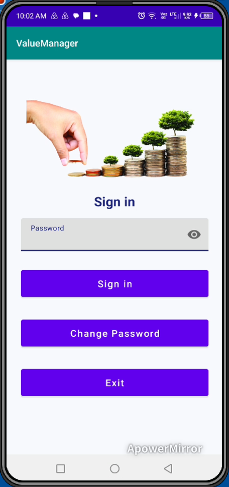
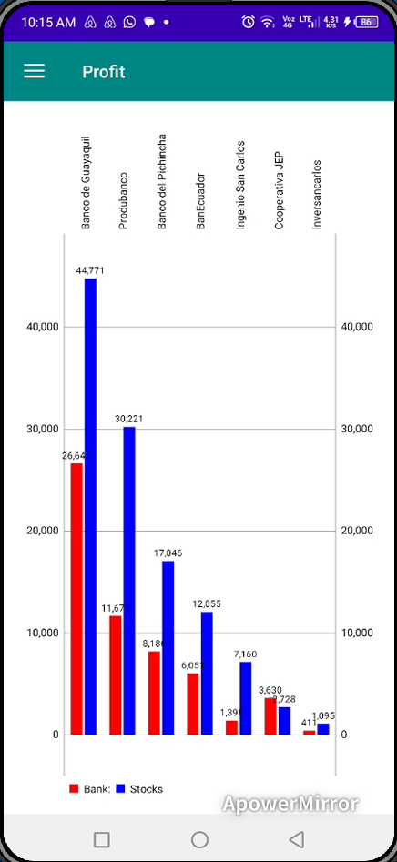
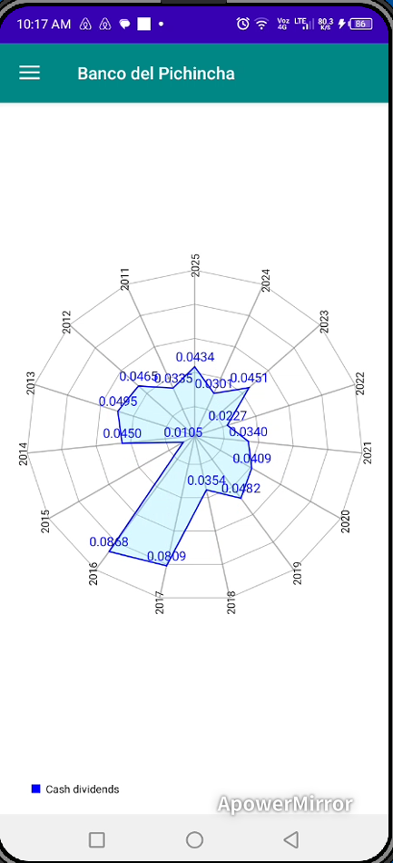

Interface de Login Mobile
Tela de login segura que fornece acesso ao ambiente mobile de gestão de portfólio.

Janela de Sincronização Desktop
Módulo de sincronização conectando o aplicativo mobile ao software desktop de gestão de investimentos.

Seletor de Ações Monitoradas
Interface spinner exibindo a lista de ações monitoradas disponíveis para análise mobile do portfólio.

Painel Principal Mobile
Visão geral da interface do aplicativo mobile, incluindo botões de navegação, resumos financeiros e informações do portfólio.

Gráfico de Barras de Distribuição de Dividendos
Visualização em gráfico de barras comparando dividendos distribuídos por diferentes ações do portfólio.

Visão Geral de Transações e Participações
Exibe compras de ações, vendas, dividendos em ações recebidos e o número de ações ainda possuídas.

Análise de Ranking de Ações
Ranking de ações baseado em avaliações e modelos de pontuação gerados pelo software desktop.

Preço de Mercado vs Valor Intrínseco
Comparação entre os preços médios anuais de mercado e os valores intrínsecos das ações monitoradas.

Análise de Lucro Simulado
Gráfico exibindo lucros simulados caso todas as posições do portfólio fossem liquidadas, com base em simulações realizadas no software desktop.

Radar de Distribuição de Dividendos
Gráfico radar ilustrando distribuições de dividendos ao longo dos anos para a ação selecionada.

Gráfico de Área dos Preços Diários de Mercado
Gráfico de área representando os movimentos diários dos preços de mercado da empresa selecionada.